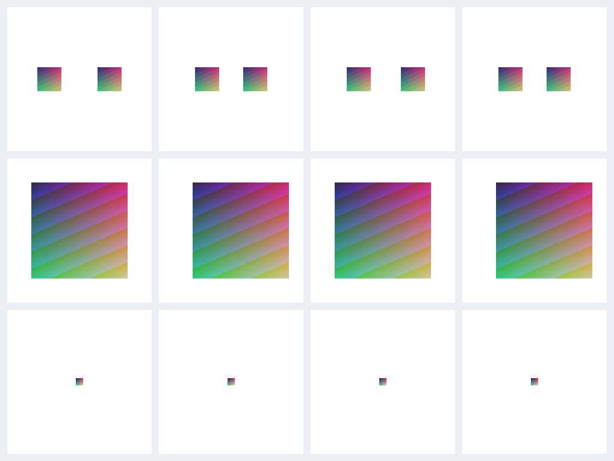

拆解競品，把有用的方法接回 AutoSpine
五個專案的核心，都是把角色與動作變成可計算的資料，再用程式執行。這輪已將改善集中到參考圖擬合：辨認真正的控制骨、計算獨立的畫面證據，以及守住搜尋範圍。
2026 年 10 月 28 日 · 專案內外掛 0.5.17 · GitHub 原始碼靜態分析＋AutoSpine 本機實測
先看這次真的改善了什麼
| 案例 | 修改前 | 修改後 | 意義 |
|---|---|---|---|
| 兩個加權部件，各往相反方向移動 5 px | 只找到一個；頂點 RMS 3.5355 px | 兩個分別對準；RMS 0 px | 不再把掛在 root 插槽上的不同網格當成同一個物體。 |
| 禁止旋轉，只平移 8 px | 沒有取得有效位移；誤差 8 px | 找到平移 8 px；誤差 0 px | 零旋轉不再造成評分除以零。 |
| 高解析貼圖，畫面只剩 36 個取樣像素 | 1,600 個貼圖樣本被當成足夠證據，回報已擬合。 | 回報畫面證據不足；不宣稱完成擬合。 | 避免圖片很大、實際顯示很小造成假信心。 |

它們共同的開發邏輯
AI 通常負責理解與寫方案；骨架和動畫由確定的程式計算。這些專案沒有共同訓練一個能直接產生任意美術級動畫的模型。圖片分層、圖像換皮的生成模型，和骨架動畫的數學引擎是不同環節。
AutoSpine 已採用這個架構，也已有遮擋排除、網格／權重檢查、官方 Runtime 播放及影片比對。這次補強的是現有流程中能重現的缺口。
五個專案的組成、原理與取捨
展開可看程式如何運作；每節連到本次核對版本的原始碼。
1. Spine Animation AI：視覺配準＋規則動畫＋圖像換皮
Claude SkillPython / OpenCV獨立換皮應用
組成：Skill 提示與四個主要 Python 腳本，處理部件定位、Spine JSON、圖集與 HTML 預覽。另有拆圖腳本，以及前後端分離的 Reskin Studio。
- 定位：SIFT 尋找部件與合成圖的局部特徵，FLANN 尋找對應點，比例檢查排除可疑配對，再以 RANSAC 求平移、旋轉和統一縮放。RANSAC 的作用是讓少數錯配不拖走整個答案。
- 備援：細小或缺少紋理的部件，改做帶透明遮罩的模板比對；搜尋尺度從可靠特徵配對的縮放中位數附近取得。
- 前後順序：比較重疊像素更像哪一層，累積上下層票數。這份實作最後用深度分數排序，並非 README 概述中的完整拓撲排序。
- 動畫：JSON 建置器讀取已決定的骨架、插槽和附件，依骨名套用 idle、walk 等預設曲線，再合併自訂動畫。它沒有自行從圖片訓練出動作。
- 換皮：把角色快照與圖集／展開部件拼成參考，交給圖像模型編輯，再依布局與遮罩重烘貼圖，沿用原來的骨架。
值得學：先找可靠位置，再做小範圍修正；不同階段使用不同演算法。界線：主範例的 16 骨與 region 附件，不能代表複雜加權網格表現。其非商用程式碼本輪僅分析，沒有搬入 AutoSpine。
2. rig-c/core：把 Rig 當成可驗證的編譯結果
TypeScript / Bun宣告式 Rig / MotionSpine 4.3
組成：規格編譯器、檢查規則與報告、渲染器、定位工具、官方 Runtime 和編輯器往返核對。AI 寫規格，編譯器負責產生格式正確的資料。
- 編譯與檢查：先解析 Rig 與動作規格，再產生骨架、附件和時間軸。建立具名的檢查規則，讓錯誤能指出是哪個部件或規格條件出了問題。
- pose：從鬆散 PNG 與圖片搜尋平移、角度、縮放。遮擋多時，獨立搜尋會把真實位置判差，或把相似肢體認錯。
- chainfit：加入候選 Rig 的繪製順序與關節關係。先把被遮住的像素排除，固定這一組可見像素後再搜尋，避免候選物件靠躲到遮擋後面騙過分數。已定位父骨後，子骨主要搜尋關節角度，減少自由度。
- 診斷：網格翻折、部件穿透與接縫能逐幀定位。這些讀數和阻止輸出的硬性格式檢查是不同層級；有讀數不等於已修復。
本輪吸收：把「看得到多少證據」「控制關係是否確定」明確帶進報告與拒絕條件。AutoSpine 原先就有固定遮擋取樣，本輪補上獨立畫面像素與未確定控制骨的處理。沒有複製它的搜尋器或引入 Spine 4.3。
關節與可見證據搜尋 · 接縫診斷 · 編輯器往返核對 · MIT 與第三方素材條款
3. Rev2D：讓 AI 和人共同編輯參數化角色
TypeScriptCPU 渲染＋WebGL 編輯器CLI / MCP
組成：自己的角色格式、參數與變形引擎、確定性渲染器、網頁編輯器、原子編輯操作及 Spine／Live2D 轉換器。
- 參數驅動：動畫或滑桿改變參數，參數經關鍵形狀綁定改變骨頭、網格或變形器，再渲染部件。眨眼、轉頭等動作可以透過相同參數反覆調整。
- 原子修改：每批操作先複製原始 JSON，在副本上執行。只要其中一個操作失敗，或最後的驗證出錯，就回傳原始資料，避免留下半改好的角色。
- 分析：密集取樣實際動畫，量 IK 伸展、物理極限、部件出界與循環接點；回報具體部件和時間。
- 共同操作：AI 可以讀編輯器狀態、調參數、播放和取得畫面。使用者在同一個視窗看到結果，減少反覆匯出影片的等待。
本輪吸收：診斷要對應到實際部件，資訊不足要列原因；保持輸入不變。界線：這輪沒有加入互動編輯器，也沒有改用 Rev2D 格式。轉換器有近似與不支援項目，不能視為 Spine 無損替代品。
4. OneClickSpine / OCS：分層模型＋輪廓內路徑＋幾何權重
Pythonsee-through 分層人工關節修正
組成：本機網頁流程、圖片分層與清理、初始關節推定、網格／權重、Spine 匯出及預覽。圖片分層才是主要需要 GPU 的階段。
- 推定關節：從軀幹出發，在角色輪廓內計算測地距離，找局部最遠端，再依路徑離開軀幹的位置分辨手腳。肘、膝沿輪廓內的路徑取得；找不到時退回比例提示位置，供人拖曳修正。
- 建網格：輪廓點與內部點做 Delaunay 三角化，再排除中心落在外面的三角形。外框膨脹、洞的處理與簡化容差，用來避免切掉美術邊緣。
- 權重：先依部位限制候選骨，避免裙子被旁邊的手吸走；算頂點到骨段的距離，取最近幾根，依距離倒數次方分配並正規化。靠骨段的頂點可以固定給那根骨。
- 接縫：同一原圖切出的片段，鄰近接縫頂點共享平均權重。不同圖層只因為碰在一起，不能一起焊接，否則手可能被裙子拖走。
本輪吸收：控制關係應從真正的蒙皮骨與既有關節語意判斷，不能只讀插槽的父骨。AutoSpine 已有自己的輪廓網格、鏈式／漸層權重與接縫檢查，這輪沒有替換它們。
流程編排 · 關節推定 · 網格、權重與接縫 · Apache-2.0 授權
5. spine-mcp-server：廣泛操作 API，核心自動綁骨較簡單
TypeScript / NodeSpine 3.8.75Cocos 面板
組成：MCP 工具註冊、讀寫 Spine JSON 的服務、CLI 匯出／匯入、動畫範本、圖集工具及 Cocos 管理面板。
- 工具層：把新增骨頭、改時間軸、改皮膚等工作包成許多小 API。工具數量反映可操作的表面範圍，不能直接代表自動判斷品質。
-
實際自動綁骨：
buildSkeleton為 PNG 建立骨頭、插槽與 region 附件；位置從索引檔讀入，沒有資料就排成網格或直列。這條路徑沒有從圖片推定解剖關節或產生加權網格。 - 動畫：骨名對應角色部位，再套用正弦循環或姿勢插值。網格波動則寫入 FFD 正弦偏移，原始碼明示目前只接受非加權網格。
修正先前判斷：它的操作覆蓋面較廣，但這份自動綁骨實作比 AutoSpine 的完整角色流程簡單。README 有 MIT 標示，核對版本的根目錄卻沒有 LICENSE，這輪只分析、不移植。
自動建骨架的實際實作 · 動畫範本 · FFD 支援界線 · 流程服務
AutoSpine 這輪的具體改法
-
讀真正的網格控制骨。依官方 Runtime
解出的非零權重，找到最近的可動祖先。若只有一個，直接使用；既有非 root
插槽的有效關節提示予以保留。多個獨立控制無法確定時，列出原因，讓
owners明確指定。 - 證據數量以畫面像素計算。保留固定遮擋遮罩，同一部件落在同一畫面像素的重複樣本，在最低證據數量、覆蓋率與位移統計中只算一次。50 個觀察值的既有門檻，現在需要不同的取樣畫面像素；配對與求解保留原本的貼圖取樣，以維持遮擋追蹤的精度。
-
搜尋守住邊界。一般搜尋保留原有候選網格；細化遵守設定範圍，零範圍只評估起點，評分不再除以零。負數或非有限範圍回報
POSE_OPTIONS。 -
讓後續追蹤使用同一個答案。每個部件回報
bone與ownership；影片流程使用這個控制骨，避免再從插槽父骨推一次而得到另一個答案。
無法確定控制骨的可見部件，會留在 coverage
分母內並標示未匹配。完全遮住、混合模式不適用或畫面證據太少的部件，則列在
unobserved，不宣稱已擬合。高 coverage
仍不等於整張圖、動作風格或美術品質都通過。
最終驗證：89 個測試檔全部通過，共 670 項通過、4 項略過，包含新增 13 項擬合案例。獨立 Node 診斷、型別、產品程式規範、修改檔案格式與外掛打包一致性也通過。
全資料夾的 lint 另有 175 項既有私人診斷腳本問題，位於 private-gate32-candidates 的工作筆記；本輪沒有改動或忽略這些檔案。產品程式（packages、schemas、tests、tools）的規範檢查獨立通過。 完整驗證紀錄
仍需要另外開發的能力
單張立繪拆圖與遮擋補圖、自然語言換皮、網頁互動編輯器，以及更可靠的複雜表情與網格變形，沒有在這輪加入。它們各自需要模型、介面或素材驗證，不能靠搬入幾個函式就宣稱完成。
目前最有價值的下一個品質驗證，是把同樣的檢查接回真實角色，記錄部件位置、穿幫和人工修正時間。這輪沒有修改既有成績、降低驗收標準或假稱已勝過其他工具。